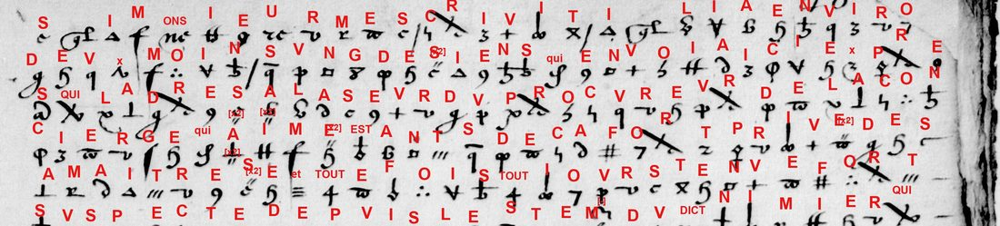
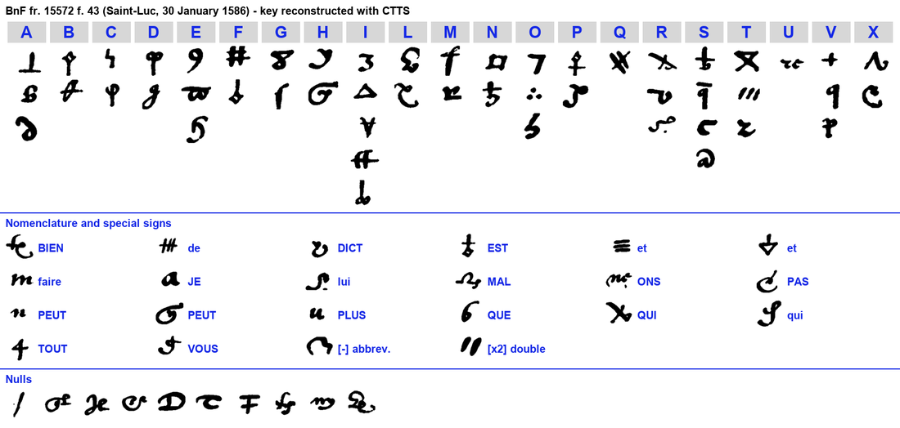
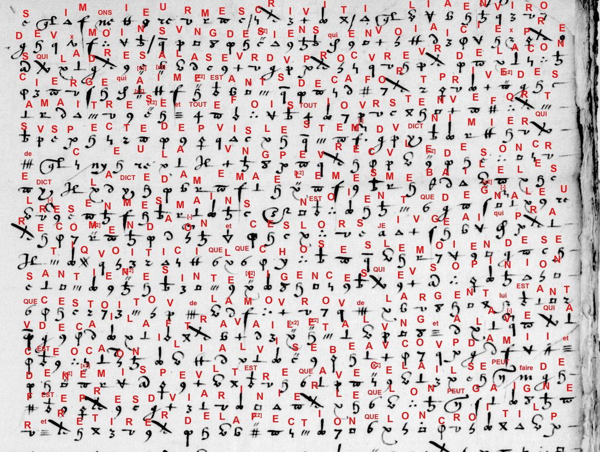

At a glanceKey recovered from the ciphertext alone · all 1,315 signs
- The letter
- Unsigned and unaddressed, dated in clear 30 January 1586. Tomokiyo attributes the hand to François d’Espinay de Saint-Luc, governor of Brouage. The volume holds despatches to Henri III and to his secretary of state Villeroy.
- Where
- Bibliothèque nationale de France, Français 15572, f. 43 (Gallica). Not on DECODE.
- The cipher
- Invented symbols: two to five for each letter, 20 signs for common words and syllables (que, est, tout, faire, vous, peut …), a sign that doubles the letter before it, and 10 nulls.
- How it was solved
- George Lasry transcribed the leaf in CTTS and recovered the letter table with its built-in cryptanalysis in 2022; in 2026 he resolved the last signs from context with Claude Opus 5.5 and edited the French. Re-checked here mechanically and statistically.
- What it says
- “Monsieur” has sent an agent to work on the concierge’s household. The writer proposes to win over the gardener, spoil a marriage the concierge wants, and spread a rumour to frighten her: “fear holds the old as often as reason does”.
- Credit
- Key, transcription, edition and translation by George Lasry (pull request 76). Description and attribution of the leaf by S. Tomokiyo.
- Still open
- Who the cover names stand for, and the recipient. Four doubtful words and two tentative symbol values.
01The leaf and the key

Folio 43 of Français 15572 is two pages entirely in cipher except the date line, Du xxxe Janvier 1586. It names neither its writer nor its recipient. Tomokiyo recognised the hand of Saint-Luc’s clear letter at f. 35, and Saint-Luc wrote another letter, f. 42, on the same day. Saint-Luc’s other ciphered letters in the volume (ff. 245 and 260) use a different table, and so do the Mayenne and Matignon despatches around it: Cipher-1, Cipher-2 and Cipher-3.
The key is a homophonic substitution. Twenty letters plus x have 51 symbols between them, two or three for most letters, five for i and four for s. Twenty more signs stand for 17 words and syllables: que, qui, est, de, et, dict, tout, faire, je, vous, lui, bien, plus, peut, pas, mal and ons (as in m-ons-ieur). One sign doubles the letter before it, one marks an abbreviation, and ten are nulls.

02The letter
In the French, bold marks a word or syllable written with a single sign. Spelling is as deciphered; [?] marks an uncertain reading and [ ] an editorial addition.

Si monsieur m'escrivit il y a environ deux mois ung des siens, qui envoya ici exprès, qui l'adressa à la seur du procureur de la concierge, qui a aimée, estant deça, fort privée de sa maistresse et toutefois toutjours tenue fort suspecte depuis l'esté du dict Nimier, qui de cela [?] ung peu reculée de son credict. La dicte dame m'a elle mesme baillé les lettres en mes mains : n'estoient que de generale recommendation ; et ces lors je jugeai qui [qu'il] pratiquoit ici quelque chose, le moyen de ses antiennes intelligences, qui [que j'] eus opinion que c'estoit ou de l'amour ou de l'argent. Lui estant venu deça, il a fort travaillé et à l'ung et à l'aultre, qui à ceste occasion il y a luise [?] beaucoup d'amis et d'ennemis. Peult estre que avec cela il se peut faire de feste près du jardinier, lequel on peut gaigner et retirer de l'affection que l'on croit il porte aux tailleurs de pierre.
Sur tout le concierge a fort à coeur le mariage d'entre la petite et le demi frère de St Suplice, qui mena là encores dimanche ; et si ces ouvertures restent proposées desast [?], c'en est que de rompre le coup à l'aure [?], ayant adjousté cellui de la soeur du courrier avec le fils du chef des armes de St Suplice, de seullement bailler le goust et en faire venir l'envie. Je vous asseure que l'on craint ici fort Sermelles, et M[onsieu]r Lue craindroit bien plus si l'on pensoit que Jugan se joignist avec lui, qui vous dirai que peut estre ne seroit il pas mal à propos d'en faire courir le bruit à bon esciant, de retenir la concierge, estant ainsi que la crainte retient aussi souvent les vieux comme la raison. Toutefois le gouverneur jugera mieulx cela que le planteur. Commence à estre assés bien avec la concierge, qui se perd petit à petit ceste première opinion conceue, sinon de le estimer trop catholique, à tout le moins de ne le penser pas trompeur ni aimant les choses mauvaises.
Du xxxe Janvier 1586 [date line in clear, after Tomokiyo]
English translation (George Lasry)
Monsieur wrote to me about two months ago that one of his men, whom he sent here on purpose, was to be addressed to the sister of the concierge's procurator. She was loved and, being on this side, very close to her mistress, and yet always held very suspect since the summer of the said Nimier, and for that [?] fallen somewhat back in her favour. The said lady herself put the letters into my hands: they were only of general recommendation. And from then on I judged that he was intriguing at something here, by means of his old contacts, and I believed that it was either for love or for money. He, having come over, has worked hard on both the one and the other, so that on this occasion he has made [?] many friends and enemies. Perhaps with that he can make himself welcome with the gardener, whom one can win over and draw away from the attachment that he is thought to bear the stonecutters.
Above all, the concierge has much at heart the marriage between the little one and the half-brother of Saint-Sulpice, who brought [him?] there again on Sunday. And if these overtures remain on the table [?], it is only to break the blow to the other [?], having added that of the courier's sister with the son of the chief of arms of Saint-Sulpice, just to give a taste of it and make them want it. I assure you that Sermelles is much feared here, and Monsieur Lue would fear much more if it were thought that Jugan was joining him. So I will tell you that perhaps it would not be amiss to have the rumour spread on purpose, to hold the concierge, since fear holds the old as often as reason does. However, the governor will judge this better than the planter. [He] begins to be on quite good terms with the concierge, who is little by little losing that first opinion she had formed: if not to think him too Catholic, at least not to think him a deceiver or one who loves bad things.
The 30th of January 1586 [date line in clear]
03Context
François d’Espinay de Saint-Luc (1554–1597) was one of Henri III’s favourites. He fell from favour in 1580 and withdrew to Brouage, the salt port of Saintonge facing Huguenot La Rochelle, which he governed and fortified. By 1586 he was again serving the King in the war against Henri of Navarre that followed the Treaty of Nemours, and that year he took the island of Oléron from Agrippa d’Aubigné. Français 15572 gathers the despatches of January to July 1586 from the King’s commanders in the west.
The letter is written in cover names: the concierge and her mistress, the gardener, the stonecutters, the governor, the planter, the little one. Who they stand for is not known. A few real names come through in the cipher: Nimier, Saint-Sulpice, Sermelles, Jugan, and a “Monsieur Lue” who may be one of the Daillon, comtes du Lude, governors of Poitou.
04How the key was found
George Lasry transcribed the three photographs of the leaf in CTTS (CrypTool Transcriber and Solver) and recovered the letter symbols with its built-in cryptanalysis in 2022. Tomokiyo published the key image on his page of Lasry’s solutions, without a plaintext. In 2026 the thirteen signs still unassigned were resolved from context with Claude Opus 5.5: ons in m-ons-ieur, je, vous in “je vous asseure”, peut in “peut estre”, bien and plus in “craindroit bien plus”, pas and mal in “ne seroit il pas mal à propos”.
Checked here on 22 October 2026:
- Mechanically.
decode.pyapplies George’s key file to his transcription and gives his counts: 1,315 signs, of which 1,168 letters, 77 word signs, 44 doubling and abbreviation signs and 26 nulls. None is left without a value. - Statistically (
docs/_validate.py, French letter model). The reading scores −2.09 per letter; random keys of the same shape score −4.72 (9.9 standard deviations lower), and a key fitted to the same signs shuffled scores −3.01 (25.7 lower). Verdict: pass. - Earlier readings. Only George’s own key image on Tomokiyo’s page; no plaintext had been published, and none was found in print.
05What remains
- Four doubtful words: “de cela [?]” and “il y a luise [?]” on the first image, “desast [?]” and “à l’aure [?]” on the second.
- Two tentative values: sign 36 as et and sign 84 as lui.
- The cover names and the recipient. The letter says who no one is; only an outside key to this correspondence would.
06Sources
- Bibliothèque nationale de France, Français 15572, f. 43: Gallica.
- George Lasry, key, transcription, French edition and translation: pull request 76, with the CTTS project in targets/saintluc1586/lasry2022/.
- S. Tomokiyo, Cryptiana: French Ciphers during the Reigns of Charles IX and Henry III (f. 43 and Saint-Luc’s ciphers) and Ciphers Solved by George Lasry (the 2022 key).
Notes: targets/saintluc1586/.